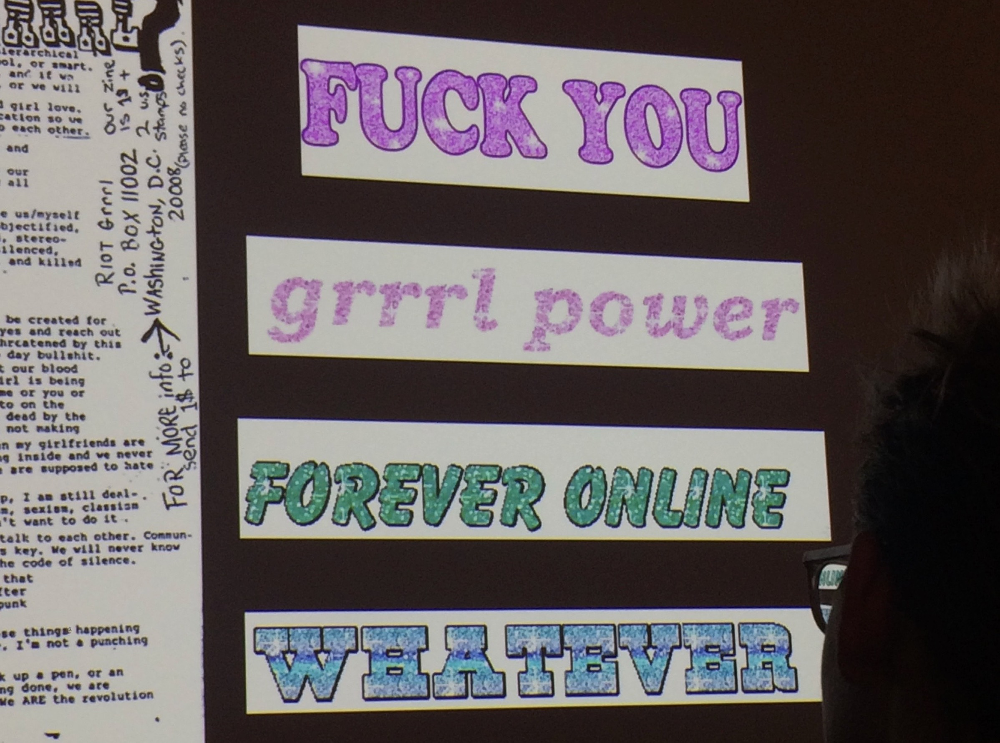
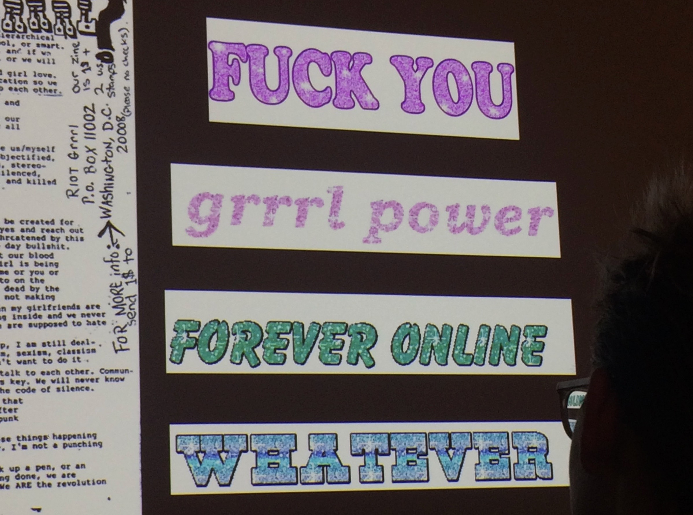

When this project began, I was attempting to make the opposite of the Dark Net: The Light Net. I compiled links, images, and songs that brought me joy, but it began to feel too personal; it was becoming Elena’s world. I ran with that concept for a second and researched early web personal pages (like Cameron’s Works) and some myspace greatest hits. I was interested in why people felt compelled to create their own little online worlds. I then designed a single-page website that sorted all of my personal references into Light, Dark, or somewhere in-between. That week, designer Nicole Killian came to RISD to give a lecture. I instantly loved her perspective, and asked for advice on my website. Her feedback was that my collection of images didn’t have a clear reason for existing together on this website. I examined my imagery again and it was obvious that I loved the kind of pop culture that academics make fun of. I researched the concept of guilty pleasures and the sexist attitudes towards pop culture traditionally consumed by women, which led me to create a sort of manifesto.
Back
 
